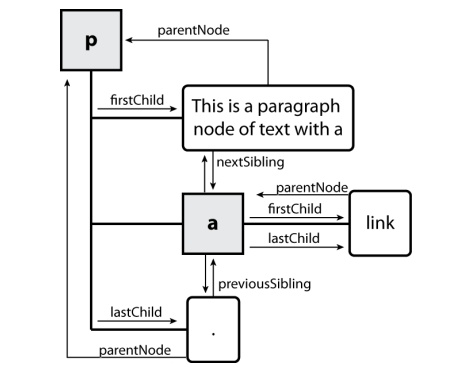

More!!!
Types are not specified, but JS does have types ("loosely-typed")
Number, Boolean, String,
Array, Object, Function, Null,
Undefinedlet level = 23; // Number
let accuracyRate = 0.99; // Number
let name = "Pikachu"; // String
let temps = [55, 60, 57.5]; // Array
JS (example)
let iLikeJS = true;
if ("web dev is great") { /* true */ }
if (0) { /* false */ }
if (1) { /* true */ }
JS
Any value can be used as a Boolean
false, 0, NaN,
"", null, and undefinedUnderstanding what is "falsey" vs. "truthy" takes patience and practice.
When in doubt, check in the browser console!
Relational: > < >= <=
Logical: && || !
Equality: == !=
Strict Equality: === !== (checks both
type and value).
5 < "7" // true42 == 42.0 // true"5.0" == 5 // true"5.0" === 5 // false=== instead of ==.
Helpful JavaScript equality table!
let woops = "abc" > 0; // falseJS
But why??!??!
parseInt("abc") === NaN and NaN > 0 is false
Why is this important?
Imagine you want to validate user input on your page to ensure someone has typed
a non-blank value into an input text box (id #my-input) before hitting
the submit button... so you add this to your .js file
if (id("my-input").value > 0) { /* do submission stuff */ }But there's a bug! What is it?
The fix
if (id("my-input").value.length > 0) { /* do submission stuff */ }null and undefinedlet foo = null;
let bar = 9;
let baz;
/* At this point in the code,
* foo is null
* bar is 9
* baz is undefined
*/JS
undefined: declared but has not yet been assigned a value
null: exists, but was specifically assigned an empty value or
null. Expresses intentional a lack of identification.
A good motivating overview of
null vs.
undefined
Note: This takes some time to get used to, and remember this slide if you get confused later.
Did you see this in the inspector when working on CP2 or HW 2?
The cause is typically that you tried to dereference a DOM element was null because the id does not exist.
<button id="bar-btn">Submit</button>HTML
id("foo-btn").addEventListener("click", handleButton);JS
Only non-null object can be dereferenced using the . (dot) notation to call a method or retrieve a value from that object
As you write JS programs, you may will run into some silent
bugs resulting from odd typing behavior in JS. Automatic type conversion, or coersion,
is a common, often perplexing, source of JS bugs (even for experienced JS programmers).
Why does it happen? JS was designed to "work" as intuitively as possible without requiring the strict types.
Why is this important to be aware of? You'll be writing programs which use variables and conditional logic. Knowing what is considered truthy/false and how types are evaluated (at a high level) can make you a much happier JS developer (some practice)
Examples of some "less-intuitive" evaluations:
154 === 154.0// true
2 < 1 < 2;// true
0 + "1" + 2;// "012"
0.1 + 0.2 == 0.3;//
false
[] + [];// ""
"1" / null;// Infinity
This is worth 3 minutes of your viewing pleasure. (starting at 1:20)
<button id="toggle-btn">Start/Stop<button>
HTML
let timerId = null; // stores ID of interval timer
function initialize() {
id("toggle-btn").addEventListener("click", toggleMessageInterval);
}
function toggleMessageInterval() {
if (!timerId) {
timerId = setInterval(sayHello, 1000);
} else {
clearInterval(timerId);
timerId = null;
}
}
function sayHello() {
id("output-text").innerText += "Hello!";
}JS
output (full example page)
Common error: Not resetting the timer to null after clearInterval!
Your timer may not start again or you may wind up with a proliferation of timers
let timerId = null; // stores ID of interval timer
...
function toggleMessageInterval() {
if (!timerId) {
timerId = setInterval(sayHello, 1000);
} else {
clearInterval(timerId); // Do this first (don't forget)!!!
timerId = null; // Don't forget this!!!
}
}JS
=>
Fat arrow functions are just another way of writing an anonymous function.
/* named function with one parameter that logs to the console. */
function sayHello(you) {
console.log("Hello " + you);
}
/* Equivalent function as an anonymous function */
(you) => {
console.log("Hello " + you);
}
/* Equivalent function with no parens because there is only 1 parameter */
you => {
console.log("Hello " + you);
}
/* anonymous function with no parameters */
() => {
console.log("Hello!");
}JS
Some sample basic syntax (from MDN)
// General form with multiple parameters
(param1, param2, …, paramN) => { statements }
// Multiple parameters and a return statement
(param1, param2, …, paramN) => { return expression; }
// or ...
(param1, param2, …, paramN) => expression
// Parentheses are optional when there's only one parameter name:
(singleParam) => { statements }
singleParam => { statements }
// The parameter list for a function with no parameters should
// be written with a pair of parentheses.
() => { statements }JS (templates)
Note: the scoping of this is different with fat arrow functions that
traditional anonymous functions ()
// Quick max and min function definitions
let max = (a, b) => a > b ? a : b;
let min = (a, b) => a < b ? a : b;
// Array filtering
let arr = [1, 2, -1, 0, 3, 4, 6, 20];
let even = arr.filter(v => v % 2 == 0); // [2, 0, 4, 6, 20]JS
More information on filter
function() { }) or use fat arrow functions as you feel
comfortable with them. You do NOT have to use fat arrow functions at all.
Recall that the .style property of a DOM object lets you set any
CSS style for an element
button { font-size: 16pt; }CSS
<button id="clickme">Click Me</button>HTML
window.addEventListener("load", initialize);
function initialize() {
document.getElementById("clickme").addEventListener("click", biggerFont);
};
function biggerFont() {
let button = document.getElementById("clickme");
let size = parseInt(button.style.fontSize); // size === 16pt to start
button.style.fontSize = (size + 4) + "pt"; // notice adding the units!
}JS
output
Note! Be careful to
.style value before doing arithmetic on it. pt, px,
vw, etc) when setting .style values.
Also: a catch: you can only use this to read styles
that have been set with the DOM .style
earlier in the code or with inline CSS which we don't
want you to do .
You cannot read style properties set in the .css file using .style.
getComputedStyle method of global
window object accesses existing styles
window.getComputedStyle(element).propertyName;JS (template)
#river {
height: 600px;
}CSS (in bubbles.css)
> let river = document.querySelector("river");
> river.style.height;
> ""
> river.style.height = "25%";
> "25%"
> window.getComputedStyle(river).height;
> "828.234px"JS Console Output
Thanks to Daniel H for the example
The following example attempts to add 100px to the top of main, but fails.
Consider the case when main has top set to "200px". Then
this code would update style.top to be the invalid value of "200px100px"
let main = document.getElementById("main");
main.style.top = window.getComputedStyle(main).top + 100 + "px";JS
A corrected version:
main.style.top = parseInt(window.getComputedStyle(main).top) + 100 + "px";JS
| Name | Description |
|---|---|
| document.createElement("tag") | creates and returns a new empty DOM node representing an element of that type |
| document.createTextNode("text") | creates and returns a text node containing given text |
// create a new <h2> node
let newHeading = document.createElement("h2");
// Add text to the node method 1
let newText = document.createTextNode("This is a new heading!");
newHeading.appendChild(newText);
// Add text to the node method 2
newHeading.innerText = "This is a newer heading!";
document.querySelector("body").appendChild(newHeading);JS
Every node's DOM object has the following (read-only) properties:
| Name(s) | Description |
|---|---|
| firstChild, lastChild | start/end of this node's list of children, may include text or comments |
| firstElementChild, lastElementChild | start/end of this node's list of children elements |
| childNodes | array of all of this node's children |
| nextSibling, previousSibling | neighboring nodes with the same parent, including whitespace nodes |
| nextElementSibling, previousElementSibling | neighboring element nodes with the same parent, skipping whitespace nodes |
| parentNode | the element that contains this node |
Complete list of DOM node properties
Browser incompatibility information (IE6 sucks)
<p id="foo">
This is a paragraph of text with a
<a href="page.html">link</a>.
</p>HTML

<div>
<p id="foo">
This is a paragraph of text with a
<a href="page.html">link</a>.
</p>
</div>HTML
Q: How many children does the div have?
A: 3
<p>Q: How many children does the paragraph have? A: 3 (text, a, text)
Q: The a tag? A: 1 (text)
Incorrect usage of firstChild/lastChild/nextSibling/previousSibling instead of firstElementChild/lastElementChild/firstElementSibling/lastElementSibling
Final thoughts about JavaScript as a language
| Java | JS | Python | |
|---|---|---|---|
| Compiled vs. Interpreted | Compiled | Interpreted | Interpreted |
| Typing | Strong | Loose | Loose |
| Variable Declaration | Must be declared before use | Does not need to be declared before use | Does not need to be declared before use |
| Key Construct | Classes (OOP) | Function | Function |